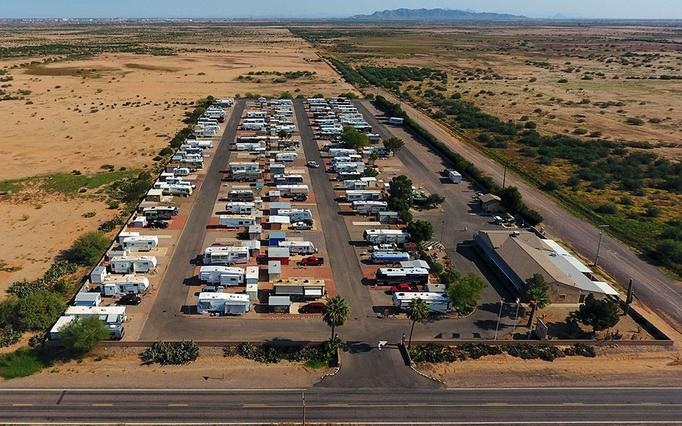

For those of you who know me at all, you know that I’m not one to sit still any too long. Although I don’t consider myself as one who’s “physical” (sports/walking etc.), I do have a need to do something – I can’t just sit around watching TV all day.
So when my hip surgery was finally scheduled and I made the decision to take the whole month of December off work, one of the first thoughts was “what am I going to do with myself all that time?”
I knew I’d have 2-3 days doing a lot of nothing immediately after surgery. I’d be using a walker most of the time those days making trips back and forth from the bed, to the bathroom, to the recliner, and back to bed.
But after those first few days I’d have physical therapy scheduled 2 or 3 days a week to help keep me occupied. I’m going to get PT at the local hospital. I prefer that to having the therapist coming to our home because I feel the professionals at the hospital have all the equipment at their disposal, they have to record everything on their laptop, and since there are other patients and therapists in the room (including their boss) I just think I get a better all around therapy session. Besides, the way I look at it, it’s my Social Event for the week!
But aside from the PT, since I’m a licensed Amateur Radio “Ham” Operator, I knew that I could take advantage of this time to allow me to play a little radio and work on some of my DX (distance) contact awards. It’s always fun to get a new QSL (acknowledgment) card from another country confirming our contact and conversation. Here’s one I just got from the Netherlands.
The operating location is the island outlined in red dots
I realized pretty quickly that my Man Cave or “shack” as we hams call it gets cold during Ohio winters. It’s a small workshop which is just off the 2 car attached garage. It’s a great place to have a shack (or workshop) because it’s on the main floor (no stairs to climb) and I can make all the noise I want and not disturb the XYL (wife) but the disadvantage is that it’s not heated so the inside temp is typically only 3-5 degrees warmer than the outside temps.
Now logic says “insulate it” but my surgery is next week and I just knew I wouldn’t have time to remove all the shelving, workbench, cabinets, and drywall to install the insulation and then put everything back together again in time.
The WB8BHK radio “shack” in the workshop off the garage
So I felt the answer to my problem was NOT to install an electric heater (high utility bills) but instead install hardware and software so that I could operate the radio from my recliner in the living room. So now I have my laptop computer with me in my recliner and I can operate using a small boom mike/headset. SWEET!
Here’s the user interface on my laptop. I can work the world from my recliner!
As the month of December goes on and I feel like doing more and more, I do have some projects that could wait until spring but that I just might get started early. We’ll see …
Kathy helped out a little at a Christmas Sale this past weekend at one of the local fire halls where she came home with a few goodies. Since we’ve been on the road for the last six years, we didn’t have any Christmas decorations. She’s had fun setting up and decorating the tiny tree and she got her nativity set back out of storage at our son’s home so she got that all arranged today.
So it’s time again for hip replacement surgery. I’ve been putting up with this discomfort/inconvenience turned to pain for far too long.
My October appt with the orthopedic surgeon set the date for December 5th. It’s now November 28th and I’m sitting in the waiting room of a cardiologist because anesthesiologist wants a “Cardiac Clearance” before I undergo surgery.
I’ve prepared and brought with me a printed history of my cardiac issues starting with my heart attack back in 2003. I hope this doc today will see clear to give my surgery next week the green light.
I’m still working as a driver for the county transportation service taking folks to and from medical appointments and I have enough sick time banked that I can take the entire month of December off with pay while I recuperate and attend physical rehab. I hope this hip (same doc/same robot) surgery and recovery goes as well as the last one.
Our handman Bob is coming this week to install a new walk-in shower. It’ll be a great improvement to the house.
Our hope is to be able to get back to doing some camping this summer and then get back out to see our “other” family at Rovers Roost in Arizona next winter.
In the meantime, we’ll shiver a little while we stay in the little house in Mt Gilead.
That’s it for now … Take Care of yourself (and your loved ones)
Ooops .. almost forgot. The doc gave me a clean bill of heart health and all systems are GO for the surgery next .. WOOHOO !!!
As we continued our trek back to Arizona for the winter, our final leg would be heading west on I-40 between Winslow and Flagstaff (and ultimately down to Casa Grande)
Winslow Arizona (you’ll remember “Standin’ On The Corner” by the Eagles) is a great stopping point as you’re heading west. The town is a few blocks long and has only a handful of tourist trap type souvenir shops and another handful of restaurants. Canned music plays from loudspeakers mounted on utility poles at the downtown square and there’s always other tourists checking out the corner while you’re there.
A short walk from an easily discovered parking spot got us down to the historic La Posada Hotel and to walk through the lobby was worth it. This is the last Fred Harvey Hotel built along the Santa Fe rail line in the ’30s that’s still in operation. The architecture and interior design are beautiful. You can read more about the Fred Harvey story here.
After our stop at Winslow we traveled west to Exit #124 and visited “Meteor Crater”. This crater is the largest and best preserved on planet earth.
The crater was produced as the result of a falling meteorite traveling at an estimated 26,000 miles per hour.
Meteor Crater measures 0.75 miles (1.2 kilometers) across and about 600 feet (180 meters) deep. The size of the asteroid that produced the impact is uncertain—likely in the range of 100 to 170 feet across—but it had to be large enough to excavate 175 million metric tons of rock.
You can still see the remains of mining operations that took place during the 30’s through the 50’s. The owner of the crater (Barringer) at that time was looking for anything of value that might have been left as a result of the explosion caused by the meteor.
This is where my Canon SX-60HS digital camera with it’s 1500mm zoom lens really came in handy!
The large picture below shows the overall view of the crater as seen from up on the observation deck at the rim. The smaller photos at the top of the gallery below show close-up views of two of the mine shafts that were dug during explorations. The steam boiler in the right-hand picture generated pressure to operate the lift winch (located behind the boiler). The winch was used to bring materials up out of the shaft and take men and tools down into the shaft.
Clicking on any of the thumbnails in the gallery will open a larger view for you to be able to see.
We finished up our visit with WHAT ELSE but food? We found what appeared to be a popular watering hole in Winslow and we decided it was time for lunch before moving on down the road to our final destination of Rover’s Roost at Casa Grande AZ.
It was a great decision. Both couples split a meal and we’re so glad we did — the portions were HUGE (as Bernie would say)
We finally made it back to our “winter home” and have been settling in. The park club functions will officially start Nov 1st but some of us early birds have been keeping busy in the meantime.
All in all, it has been a great trip across the northern plains and down through Wyoming, Utah, and Arizona. We’ve seen a lot of beautiful landscape, hooked up with old friends along the way, met new folks that we can now consider friends, and continued to learn to love and appreciate each other as we continue this life adventure.
Thanks for riding along, we will look for you on down the road. I’ll be documenting some of our adventures while we are her for the winter, so there will be more to come.
In the meantime, be safe, be healthy and take care of each other as you travel this journey we call life.
Q? For the benefit of those of you who are not RV’ers, Q stands for Quartzite, a small town in western Arizona. The town explodes in the winter with hundreds of thousands of RV’ers who choose to live in the desert for the winter. More on that later because I plan on writing to you while we are there so I can share the experience with you. In the meantime, follow this link to learn a little more about where we’re going.
Since we’ve been here at Rovers Roost since about mid October, we’ve been having fun with our neighbors, and doing a few little projects around here.
We thought that maybe we were having a temperature control problem with our fridge. We had an Indoor/Outdoor thermometer in there for years. This unit showed us the refrigerator temperature and the room temperature. One day I noticed it was up to 49 degrees – Yikes!
Problem was, we never knew if the fridge was ever actually in cooling mode or not. If the thermometer indicated 40 degrees, was the control circuit calling for cooling? These RV fridges don’t have a compressor, they rely on heated ammonia gas to provide the cooling and that process is nearly silent.
I wanted to know what the control board was saying … was it firing the gas solenoid or the electric heating element? Was it trying to cool at all?
Off to Amazon to order a couple little lights that I could install into the wall next to the fridge to tell me when it’s calling for “cool”.
These little guys work great for the 12 volt gas solenoid. I just drilled a hole in the wall next to the fridge, connected one wire to pin 2 of J4 on the control board and the other wire to ground. I chose to use the blue colored light for gas since the gas flame is mostly blue.
I used this green 120 volt panel light for the 120 volt electric heating element. I hooked the two wires in parallel to the existing wires on J7 and J8 of the fridge control board. These wires go to the electric heating element in the boiler.
Then (also on Amazon) I bought a ” New and Improved” Indoor/Outdoor thermometer. This new one comes with one sensor inside the display (for the room temperature) and 3 additional sensors for remote locations. We put one in the freezer, the second in the fridge, and the third one outside. So now we can see at a glance all four temperatures (and humidity). The outside sensor is currently hanging on the rear grill of the coach because it’s in the shade. I don’t want to permanently install it on the coach, because then it’s apt to be in the direct sunlight more often than not. I wonder how long it will take for me to forget it’s hanging on the back by a paper clip and lose it as we zip down the freeway at 60+ mph!?
Indoor temp is 74.8, freezer is -1.7, fridge is 34.7 and outside is 39.8Will I remember to take this off before we head down the road?
If you think you’d like one of these little gadgets for your rig/home, you can order it direct from our Amazon store by clicking on the link below.
Turns out after installing the new 4-station thermometer and installed the indicator lights, we now realize that the fridge controller is working just as it is supposed to. When the temp rises, the control turns on and a few hours later, the temp is back down to where it’s supposed to be.
These RV fridges don’t cool as quickly as a residential fridge with a compressor full of Freon, so we just have to be patient after loading it up with groceries from the store or putting in a new gallon of lemonade or freshly made liter of hot tea!
Although our storage shed on our lot was new a couple years ago (just before we got the lot) the original paint from Tuff-Sheds was pretty lame. It was spray painted before being assembled and the paint is “flat” and a thin coat. This front (with the window) wall faces south and gets super-heated sun rays all year long, especially in the 100+ degree summers.
I knew if we were to protect the wood siding from deteriorating, we need to put a good heavy coat of exterior paint on it (and probably re-paint regularly)
Kathy decided she wanted different colors so a few weeks ago I bought some Sherwin-Williams Weathershield Semi-Gloss Exterior paint and painted the trim the green color (per her instructions of course!)
Our shed trim painted – but still the original siding color
This week we went back to Lowes and bought the lighter color for the siding so I could at least get the southern facing wall painted before we leave for the season.
The shed south wall painted with the new lighter color
I’ll do the other three walls next winter when I have more time.
Today is Sunday and we’ll be heading to Q on Thursday so I still have some small remaining tasks left to do. Need to mount and secure the bikes on the bike rack, regenerate the water softener and fill our fresh water tank (54 gallon) with fresh softened water, take down my ham radio antennas, clean the windshield on the coach, put the chairs and tables in the basement, get our on-board propane tank filled before we leave the park, and bring the WAVE 6 Catalytic heater up from the basement for use when we are boondocking at Q.
This heater will keep us warm as the sun goes down and we won’t need to use any electricity to operate it. It just gives off a cozy warm radiant heat.
I’ve already got the CB antenna mounted on the car – did that last week. I’ve got things set up so I can move the CB radio from the coach to the car. I don’t normally use the CB, but it’s one of the requirements from the caravan leader for our trip to Mexico in February. I’ll install it back in the coach before heading to Q so we can monitor any freeway problems along the way.
And I found a small wooden shelf on our “trade table” at the clubhouse last week. People put their unwanted items on the table, others pick them up and put a few bucks in the bucket to help pay for some of the activities in the park.
I’m not sure what the previous owner used it for, but we want a wall mounted spice rack. I found some leftover oak, ripped it down to the right size on the table saw in the shop, and attached two strips to the front of the shelf. Primed it with exterior latex, spray painted it dark brown and am planning on installing it on the wall today. This will clean up our kitchen table.
I added 2 bars on the front to keep items “in” while we drive & sprayed it a dark brownWith the rack now on the wall, we have a lot more room on our dining table
If you’re not already subscribed to this blog, you can easily do so by scrolling up to the top of any page and entering your email address in the block on the right side.
You can also subscribe to our YouTube channel (herbnkathyrv) on You Tube.
If you’re curious (at any time) to know where we are at that moment then click the button at the top right of this page labeled “See Where We Are Now“.
Any questions, I’ll be glad to answer them as best I can. Please put questions and comments in the comment section below rather than email so that others can benefit from our conversation as well.
We’d love to hear from you. If you scroll all the way down to the bottom of this page, you can send us a note. Again, thanks for riding along. ’til next time – safe travels.
We are closing in on finishing up our 3rd year of living the full-time RV lifestyle.
The road has been a good one to us. Not that it’s been all fun, frolic, and laughs but it has brought us closer together – not only physically but emotionally as well.
Kathy and I just celebrated our 45th wedding anniversary with an Amtrak trip to Glacier National Park. During our lifetime together, a lot of that time was “alone” time. In one of my early career positions I was gone “on the road” nearly every weekday, sleeping in motels Sunday through Thursday nights somewhere in my multi-state territory.
Even when I was at home, my time was consumed with working on the “work” business from home involved in conference calls and drafting of sales proposal letters along with being active in the only real hobby I ever had … local ham radio clubs and events.
Me in my ham radio “shack” in the early ’80’s
Kathy had a handful of different jobs over the years (most importantly raising the kids and keeping the house together) with most of the time working in the school system so she could be off work and at home when the kids were at home. We were fortunate because with her job schedule we didn’t need to hire child care.
But now our lives are a polar opposite of that earlier time. We are together ALL THE TIME. We travel side by side, we share meals, we do the mundane tasks of grocery shopping, house cleaning and laundry together, and we sleep next to each other. I think we have both come to appreciate each other far more than earlier in our marriage. We’ve always had a lot of mutual love and respect for each other – rarely raising our voices to the other. But before … we had other things to occupy our time. If we felt the urge for some “space”, we could easily separate ourselves from the other. Now on the other hand – it’s not so easy. After all, we live in a 300 sf box with a little bit of green space around us.
Our three years together in our “Green Machine” Airstream motorhome has given us the luxury at this stage in our lives of … in a way … becoming one.
45 years and still “Livin’ & Lovin'”
When we started this lifestyle three years ago, we realized that in order to travel from place to place and enjoy the local life, we needed to have some assistance with the household budget. We sold our house, paid off what little remaining debt we had and decided we would live off our social security income and a small pension Kathy had from working at the school system. We decided we would keep the retirement nest egg (IRA’s, investments) alone for future use when (if) we get off the road. Oh sure, it’ll happen sometime. We will either run out of good health or run out of our love for the road, but by leaving our investments alone so they can continue to grow, at least we won’t HAVE to come off the road because we’ve run out of money.
Although I had no employer monthly pension income (I was self employed the last 20 years) we had purchased an annuity years ago that could now provide a supplement to our Social Security along with Kathy’s small pension.
Yes we could “make it” on those income sources alone, it was going to be tight. We’d have to always be scrutinizing the budget each month and we’d have little room if any for any emergency expense or extravagance.
Somewhere, somehow … we discovered Workamping/Hosting/Volunteering and the opportunities it can provide. These experiences have given us the opportunity to travel and have rent-free sites and utilities. In addition, these opportunities have given us something else that we never really expected … new and lasting friendships.
Workamping/Camp Hosting/Volunteering opportunities are generally long-term commitments. What I mean by that is that most often (but not always) your “employer” would like to have their “staff” on board for the season or even year-round.
Starting out, our first gig was 6 months long – the winter season in Arizona.
Although our owner/managers (George & Sigrid) were wonderful to us, treated us so well – like family … we ultimately decided when making arrangements for future opportunities we would look for more “short term” commitments. We’ve since been working one-month to 3-month gigs.
This way we can continue to travel around the country and have more new experiences and make more new and lasting friendships. If we worked for 6 months in each location, we’d be 130 years old and still not have completed our Bucket List!
Here’s a U.S. map showing where we’ve AT LEAST stayed overnight in the last three years. You can see we’ve still got a long way to go … we need to spend more time along both the east and west coasts.
Oh yeah, earlier I mentioned this part about friendships but then I got off track – excuse me. We have discovered that working (volunteering) as we travel allows us to meet, get to know, and build lasting relationships with lots of wonderful people from all over the country.
There are 10 couples here, all living in our rigs side-by-side in Volunteer Village at the Spearfish City Campground right across the street from the hatchery.
We work side-by-side, share most nights of the week around the campfire cooking smores and enjoying each other’s stories and even have monthly pot luck meals along with weekly free music festivals in the city park just a few hundred feet away.
One of our pot luck meals at Volunteer VillageBrooksie entertaining us with one of her stories while Matt prepares his SmoreEnjoying one of the weekly free “Canyon Accoustics” concertsSometimes it’s a smaller group out to share a meal together
When we have to say goodbye and hit the road again, we stay in touch with our new friends as we travel using both Facebook (groups) and a Facebook-like app made just for RV’ers called RVillage.com. Both of these are great resources to keep up with our buddies and see what their next adventure is and maybe where we might apply to work/volunteer in the future.
We’ve already had at least a dozen experiences over the last three years where we have volunteered with folks in say, Livingston Texas and met up with them again in Burlington Vermont or Ludington Michigan (or somewhere like that). Sometimes it’s planned, but more often it’s serendipitous!
But what about our family and “old” friends? Do we miss our kids and grandchildren? You bet! It would be great if we could do what we are doing AND fly back home to Ohio at least once or twice a year to spend time with the family. But, fact is we just can’t afford to that. Life is often about sacrifices (and opportunities!)
It really depends on where we are working and how long the commitment is and where the next commitment will be. We don’t plan our work locations based on traveling back home once or twice each year. We plan our work locations on where we have NOT been, what we might like to see, and how appealing the location and job description/compensation package is.
We were last in Ohio April of 2018 for a month and we will be back there summer of 2020 so we’ll have plenty of time to catch up. The photos below of the kids, grand-kids, in-laws and old neighbors might be a couple or a few years old, but they’re some of our favorites.
And of course, we post LOTS of info and pictures on Facebook, videos on You Tube and posts here on the blog for family and friends to see what we’re up to.
So yes, it’s great to travel the country and see all the great exciting new places, but we’ve found that the wonderful personal relationships we’ve developed with all our new friends as we travel and volunteer are the larger perk of the RV lifestyle that we embrace.
If you are interested in finding out more about our Workamping and volunteering experiences, just scroll on up to the top right hand side of this post and enter either “volunteer” or “workamp” in the search box and hit “enter”.
If you’re not already subscribed to this blog, you can easily do so by scrolling up to the top of any page and entering your email address in the block on the right side.
You can also subscribe to our YouTube channel (herbnkathyrv) on You Tube.
If you’re curious (at any time) to know where we are at that moment then click the button at the top right of this page labeled “See Where We Are Now“.
We’d love to hear from you. If you scroll all the way down to the bottom of this page, you can send us a note. Again, thanks for riding along. ’til next time – safe travels.
It’s March 18, 2019 and we are currently parked at the Pima County (Tucson, AZ) Fairgrounds with about 2000 other Escapee RV Club members enjoying the annual Escapade national gathering.
One of the evening entertainment sessions at 59th Escapade – Tucson, AZ
Since we “hit the road” and started our full-time RV lifestyle in late 2016, we had been Workamping our way around the country. We work at campgrounds or RV parks offering about 15-20 hours per week in exchange for rent-free living at the park and it typically includes all our utilities, cable TV, wifi, laundry and sometimes discounts at the park store or nearby attractions.
But being members of the Escapees RV Club, we were able to take advantage of getting on a “Wait List” for any of their parks. We put our names on the Wait List for the parks in; Wauchula FL, Hondo TX, Casa Grande AZ, Benson AZ, and Pahrump NV. We figured whichever park had our name at the top of the list first (waiting lists are often many years long), that’s the park we’d call “home” for the winter.
In addition to having a place to winter regularly, the “home base” would provide us a place to go at very little additional cost (only electric and propane) to be should we need a lengthy stay for say, recovery from a medical procedure – planned or otherwise.
As it turned out, we rose to the top of the list at Rover’s Roost in late 2017, accepted the lifetime lease agreement, continued our Workamping commitments for spring, summer, and fall of 2018, and then arrived here November 1st to be “on vacation” for the winter months.
We’ve spent a very relaxing and enjoyable winter at our leased lot at the Escapees Rover’s Roost RV Park in Casa Grande, AZ. I’ll share more with you in later posts about our time here at “The Roost” both having fun with our new friends along with some of the projects we’ve completed to our “home on the road”.

Our winter home at Rover’s Roost RV Park at Casa Grande, AZ
But now it’s early spring and it’s time to leave “The Roost” for the summer season (it gets WAY too hot here) and head north to cooler climates.
This year, we are heading to Montana to work at an Army Corp of Engineers campground as Park Hosts. We’ll be at Ft. Peck Dam Downstream Campground for 3 months (April, May, and June) and then we will move a little east to our next Workamping commitment at DC Booth Historic Fish Hatchery in Spearfish South Dakota working as visitor center and museum employees. We’ll be there July, August, and September.
Here’s a map of our trip north next month. This is subject to change as we have over 120 places on our Bucket List and we’ll try to hit many of them along the way, even if it takes us off track a hundred miles or so. We’re not in any big hurry to get north, we’ll hopefully just follow the spring thaw!
If you’d like to check up on us as we travel and see where we are at any given moment in time, you can just go to www.aprs.fi and type my ham radio license number WB8BHK-9 into the Search box and it’ll return a Google map with our exact location at that moment. We’d love for you to follow along!
I admit I’ve been a bit lax the last few months and haven’t posted blog entries as often as I would have liked to. I’ll work to improve my postings as we travel north and we appreciate you following along.
Oh, by the way …. we’ve designed a new logo to market our brand. Whatta ‘ya think?
One of the benefits of attending the Dayton Amateur Radio Association “HamVention” every year is to spend time with my long-time (notice I didn’t say “old”) friends. Dave, Ed, and I grew up together in the 60’s in Redford Township, Michigan – a western suburb of Detroit. We played together, we rode bikes together, we got in trouble together and we attended school together (since the 2nd grade) and we also got our ham radio licenses together – all first licensed in 1969.
This year at HamVention we decided we’d like to take a trip away from the main venue and visit the site of the Bethany Transmitting Station of the world famous Voice Of America (VOA) located just off I-75 between Dayton and Cincinnati.
The VOA Bethany Relay Station was designed by the Crosley Broadcasting Corporation. Although the actual recording studios were in New York City and later moved to Washington, D.C., the signals were relayed through dedicated AT&T long distance telephone lines to the transmitter site near Cincinnati.
The VOA began in 1942 as a radio program designed to explain America’s policies during World War II and to bolster the morale of its allies throughout Europe, Asia, the Middle East, and Africa. After the war, VOA continued as part of America’s Cold War propaganda arsenal and was primarily directed toward the western European audience. In February 1947, VOA began its first Russian-language broadcasts into the Soviet Union.
With the words, “Hello! This is New York calling,” the U.S. Voice of America (VOA) begins its first radio broadcasts to the Soviet Union. The VOA effort was an important part of America’s propaganda campaign against the Soviet Union during the Cold War.
The initial broadcast explained that VOA was going to “give listeners in the USSR a picture of life in America.” News stories, human-interest features, and music comprised the bulk of the programming. The purpose was to give the Russian audience the “pure and unadulterated truth” about life outside the USSR. Voice of America hoped that this would “broaden the bases of understanding and friendship between the Russian and American people.”
The Bethany site encompassed hundreds of acres of land for the huge rhombic antenna farm that could be switched to direct the 1.2 million watts of radio frequency programming to different locations around the world, depending on the time of day and atmospheric conditions.
The base of the antenna switch network out in the field
In one of the pictures above you can see my friend Dave talking to the last remaining employee of the VOA at this site — Dave’s getting quite a history lesson.
Note the windows at the top of the tower in the first picture – It kind of looks like an airport control tower. I asked our tour guide the purpose of that tower. His response … “for sharpshooters”. This Bethany Relay Station was specifically placed here because of it’s distance from the east coast stations where they could be more susceptible to enemy attack. Even though the Bethany Station was so far west, they still stationed military armed personnel to protect the Voice Of America to make sure the message always got out.
Due to new satellite and internet technology, the need for the high power RF radio broadcast stations has diminished and the station was closed as an active transmitting site in 1994. Fear not however as the Voice Of America still broadcasts every day from their studios in Washington D.C. and their programming can be heard on the internet and on some local PBS network stations around the country. Find out more and listen to VOA live at https://www.voanews.com/
And thanks to dedicated volunteers, we were able to tour the museum. Take a look at the pictures below.
There were two reasons for our trip to Quartzsite, AZ this past week. The first was because we were so close (3+ hours) drive time from there we just HAD to see what everyone has been going to see and do for so many years, (The big Vacation, Sports, and RV Show).
Then I found out that this week was also the 20th annual Amateur Radio Convention known as “Quartzfest“. Being a ham radio operator since the late ’60’s, (My call is WB8BHK) I thought it would be fun to hang out with some like-minded people. We were all camping in the same area … on BLM land about 6 miles south of Quartzsite in an area known as “Road Runner”. Quartzsite is just above Yuma on this map.
Sonoran Desert
Camping in the desert there is free for up to 14 days. Of course, you need to be totally self-contained (fresh water/waste tanks/batteries/generator/solar) since you are in the desert with no utilities or hookups. When we showed up on Sunday, the registration desk showed we were rig #239 … by the time we left on Thursday there were just under 600 rigs/hams registered!
The purpose of the Quartzfest Convention is to provide a time for education (through seminars and forums), sharing of ideas, display and demonstration of radios and antenna projects, and of course — to have fun.
The Sonoran desert treated us well while we were there, although Monday was VERY windy. Tuesday, Wednesday, and Thursday were beautiful sunny days with low winds and temps in the 50’s to 60’s.
The pictures in the slide show below illustrate just some of what we saw surrounding us in the desert. Some of the interesting RV rigs with all kinds of antennas. Check out the pix of the guy in his electric recumbant bicycle, he was zipping around all week silently. Take a look at Mark’s company web site here.
Sunrise in the Sonoran Desert
Campers around us
Some more of our neighbors
Looking east early in the morning
Hams everywhere
Lots of solar power on this rig
Doug, our neighbor has a big rig to pull his 5th wheel
Then there’s the little guys too
The happy couple
A really cool older Airstream motor home
This trailer is made of plywood
Look closely, this is a white pick-up truck pulling a 5th wheel that is pulling a 4 wheeler on another trailer!
The daily 3:30 Happy Hour gathering around the campfire
Gordon West’s (WB6NOA) communications van
The W7Q Special Events station
Huge HF antenna on this fella’s pickup
One of the vehicles getting ready for Wednesday’s Trail Ride
About 50 cars/jeeps in the trail ride
All kinds of antennas, .. big and small
Neil (W6FOG’s) Geo Tracker all set for mobile emergency communications
Here’s Mark on his electric recumbent bike
Another shot of Mark on his bike (It folds up too!)
Check out this short video of our trip to Quartzfest 2017
We’ll have subsequent posts of our day trip to Lake Havasu and Parker Dam along with a post about the Big RV show at Quartzsite.
We’d really appreciate it if you would do us the favor of helping us continue to publish this RV / Travel / Workamping blog. Do you purchase any products from Amazon? If you do, it would be great if you’d use the link in the sidebar or one of the links below to get to Amazon … after that you can change your search. By making your Amazon purchases from our site, we will receive from Amazon a small percentage of your purchase and it doesn’t cost you any more. We’d really appreciate your help.
The big RV Show in Quartzsite starts this Sunday (Jan 22) and we’ve been doing some things to the coach to make sure we’re ready to go.
We’ve been watching some of the YouTube videos about the Quartzsite RV Show and “The Big Tent” and we’re looking forward to the event and seeing all that it has to offer.
We’re planning on dry camping just a few miles south of town on BLM land with hundreds of other Ham Radio Operators that have an area that will be used for Quartzfest 2017. This is an official ARRL Amateur Radio Convention.
In our cars, we get so used to everything working just fine that we take it for granted that all will be “ok” when we turn that key. It’s too easy to do that in the motor home as well. But if something should go wrong, it could cost thousands of dollars and make for a really lousy day – especially since the coach is not only our mode of transportation, but it’s our home as well. If it has to go in the shop for mechanical issues, we’d have to pay for a motel bill – and that’s not good.
Before we head out we always want to check the following.
Check the water level in the deep cycle batteries since we’ll be using those to power our; lights, fresh water pump, refrigerator, water heater, and tv. I try to water the batteries monthly anyway even while we’re hooked up to shore power because they can boil off even while they are in “float” charge sitting here at the park
Check the engine oil level and radiator water level
Check and adjust all tire pressures (coach at 90 psi cold and the car at 30 psi cold)
Check the food inventory to make sure we’ve got enough in the fridge and pantry to last us a few days
Empty the black and gray tanks and fill the fresh water tank
Do a visual check of all the exterior lights (turn/brake/hazards/headlights)
Lower TV and radio antennas
The day is just about finished and all the above has been completed and we will be ready to head out Sunday morning. We work here at the RV park on Fridays and Saturdays, so our plan is to leave Sunday morning, (it’s only a little over 3 hours to Quartzsite) and come back Thursday afternoon.
I’ll have plenty of pictures and video to share with you after we get back.
In the meantime, we’d really appreciate it if you would do us the favor of helping us continue to publish this RV / Travel / Workamping blog. Do you purchase any products from Amazon? If you do, it would be great if you’d use the link in the sidebar or one of the links below. By making your Amazon purchases from our site, we will receive from Amazon a small percentage of your purchase and it doesn’t cost you any more. We’d really appreciate your help.
For over 35 years now, there has been a group of people traveling to a once barren area known as Quartzsite, Arizona. These seekers come by the thousands and are often referred to as “gypsies of the modern world”. Entering the grounds of Quartzsite is like entering another world… Back to the good old days in many ways.
But now, this town of 3800, in January of each year, grows to nearly 100,000. People in their RV’s come from far and wide to hang out for the winter and enjoy each other’s company while visiting some of the attractions including; rock and gem shows, the worlds largest RV show, ham radio convention, and countless other venues.
Although there are some RV parks at Quartzsite, most folks stay in “campgrounds” of sorts at BLM (Bureau of Land Management) lands. There are nearly 12,000 acres of open desert where one can “Boondock” for up to seven months (for a low fee of $170) or other desert sites where you can set up camp for free.
Although there are pit toilets, black water dump stations, and fresh water stations at the entrances to the BLM campgrounds, it’s easiest if the RV is self-contained to make your stay self-sufficient for a few days or more.so
We have a 70 gallon fresh water tank, 52 gallon gray and black water tanks, a pretty hefty battery bank (to power the 12 volt lights and water pump) along with both solar panels on the roof and a 8000 watt diesel generator to recharge the batteries. We also have a 2000 watt power inverter that will take the 12 volt dc battery and convert it to 110 volt ac power so that we can watch our TV at night and make coffee in the morning.
Our refrigerator and water heater both run on propane when we’re boondocking and 110 v shore power when we are connected in an RV park.
So Kathy and I are excited as we plan on heading to Quartzsite on Jan 22nd. We’ll be there for three or four days and hopefully we’ll have enough food in the fridge and propane in the tank to keep us self-sufficient for that time.
We’re looking forward to being at Quartzite, we’re counting on seeing a lot of cool stuff, meeting a lot of great people, and hopefully NOT spending a lot of money at “The Big Tent” RV show. We’ll update you with pictures as we get them. Stay tuned.


{kind=link}
{kind=link}
{kind=link}
{kind=link}
{kind=link}
{kind=link}
{kind=link}
{kind=link}
{kind=link}
{kind=link}
{kind=link}
{kind=link}
{kind=link}
{kind=link}
{kind=link}
{kind=link}
{kind=link}
{kind=link}
{kind=link}
{kind=link}
{kind=link}
{kind=link}
{kind=link}
{kind=link}
{kind=link}
{kind=link}
{kind=link}
{kind=link}
{kind=link}
{kind=link}
{kind=link}
{kind=link}
{kind=link}
{kind=link}
{kind=link}
{kind=link}
{kind=link}
{kind=link}
{kind=link}
{kind=link}
{kind=link}
{kind=link}
{kind=link}
{kind=link}
{kind=link}
{kind=link}
{kind=link}
{kind=link}
{kind=link}
{kind=link}
{kind=link}
{kind=link}
{kind=link}
{kind=link}
{kind=link}
{kind=link}
{kind=link}
{kind=link}
{kind=link}
{kind=link}
{kind=link}
{kind=link}
{kind=link}
{kind=link}
{kind=link}
{kind=link}
{kind=link}
{kind=link}
{kind=link}
{kind=link}
{kind=link}
{kind=link}
{kind=link}
{kind=link}
{kind=link}
{kind=link}
{kind=link}